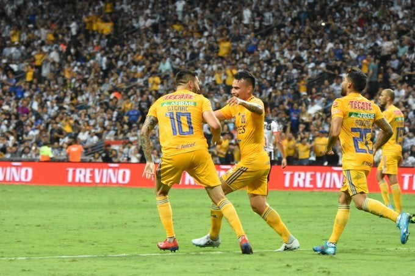

Un ritmo regular tuvo el arranque del encuentro; los locales presionaron al contrincante desde la salida, pero la mayor posesión del esférico fue de los felinos, que lucharon por toman ventaja rápidamente con un centro de Javier Aquino que no pudo rematar Enner Valencia.
